<!DOCTYPE html>
<html>
<head>

    <!-- Document Settings -->
    <meta charset="utf-8" />
    <meta http-equiv="X-UA-Compatible" content="IE=edge" />

    <!-- Base Meta -->
    <!-- dynamically fixing the title for tag/author pages -->


    <title>JSON Support for the XES Event Log Standard - SUPPORTING XES USING JSON</title>
    <meta name="HandheldFriendly" content="True" />
    <meta name="viewport" content="width=device-width, initial-scale=1.0" />
    <!-- Styles'n'Scripts -->
    <link rel="stylesheet" type="text/css" href="/assets/built/screen.css" />
    <link rel="stylesheet" type="text/css" href="/assets/built/screen.edited.css" />
    <link rel="stylesheet" type="text/css" href="/assets/built/syntax.css" />

    <!-- custom.css -->
    <link rel="stylesheet" type="text/css" href="/assets/built/custom.css" />
    <!-- Font Awesome -->
    <link rel="stylesheet" href="https://maxcdn.bootstrapcdn.com/font-awesome/4.7.0/css/font-awesome.min.css">

    <!-- 웹폰트 추가 -->
    <link rel="stylesheet" href="https://fonts.googleapis.com/earlyaccess/nanumgothic.css">

    <!-- syntax.css 추가 -->
    <link rel="stylesheet" type="text/css" href="/assets/built/syntax.css" />


    <!-- highlight.js -->
    <link rel="stylesheet" href="//cdnjs.cloudflare.com/ajax/libs/highlight.js/9.12.0/styles/default.min.css">
    <style>.hljs { background: none; }</style>

    <!--[if IE]>
        <style>
            p, ol, ul{
                width: 100%;
            }
            blockquote{
                width: 100%;
            }
        </style>
    <![endif]-->
    
    <!-- This tag outputs SEO meta+structured data and other important settings -->
    <meta name="description" content="SeongJae Yu 블로그" />
<link rel="shortcut icon" href="https://SEONGJAE-YOO.github.io/assets/built/images/favicon.jpg" type="image/png" />
<link rel="canonical" href="https://SEONGJAE-YOO.github.io/JSONSupportfortheXESEventLogStandard-SUPPORTINGXESUSINGJSON" />
<meta name="referrer" content="no-referrer-when-downgrade" />

 <!--title below is coming from _includes/dynamic_title-->
<meta property="og:site_name" content="Big Data" />
<meta property="og:type" content="website" />
<meta property="og:title" content="JSON Support for the XES Event Log Standard - SUPPORTING XES USING JSON" />
<meta property="og:description" content="SeongJae Yu 블로그" />
<meta property="og:url" content="https://SEONGJAE-YOO.github.io/JSONSupportfortheXESEventLogStandard-SUPPORTINGXESUSINGJSON" />
<meta property="og:image" content="https://SEONGJAE-YOO.github.io/assets/built/images/book.png" />
<meta property="article:publisher" content="https://www.facebook.com/" />
<meta property="article:tag" content="Thesis" />
<meta name="twitter:card" content="summary_large_image" />
<meta name="twitter:title" content="JSON Support for the XES Event Log Standard - SUPPORTING XES USING JSON" />
<meta name="twitter:description" content="SeongJae Yu 블로그" />
<meta name="twitter:url" content="https://SEONGJAE-YOO.github.io/" />
<meta name="twitter:image" content="https://SEONGJAE-YOO.github.io/assets/built/images/book.png" />
<meta name="twitter:label1" content="Written by" />
<meta name="twitter:data1" content="Big Data" />
<meta name="twitter:label2" content="Filed under" />
<meta name="twitter:data2" content="Thesis" />
<meta name="twitter:site" content="@" />
<meta name="twitter:creator" content="@" />
<meta property="og:image:width" content="2000" />
<meta property="og:image:height" content="666" />

<script type="application/ld+json">
    {
        "@context": "https://schema.org",
        "@type": "Website",
        "publisher": {
            "@type": "Organization",
            "name": "Big Data",
            "logo": "https://SEONGJAE-YOO.github.io/"
        },
        "url": "https://SEONGJAE-YOO.github.io/JSONSupportfortheXESEventLogStandard-SUPPORTINGXESUSINGJSON",
        "image": {
            "@type": "ImageObject",
            "url": "https://SEONGJAE-YOO.github.io/assets/built/images/book.png",
            "width": 2000,
            "height": 666
        },
        "mainEntityOfPage": {
            "@type": "WebPage",
            "@id": "https://SEONGJAE-YOO.github.io/JSONSupportfortheXESEventLogStandard-SUPPORTINGXESUSINGJSON"
        },
        "description": "SeongJae Yu 블로그"
    }
</script>

<!-- <script type="text/javascript" src="https://demo.ghost.io/public/ghost-sdk.min.js?v=724281a32e"></script>
<script type="text/javascript">
ghost.init({
    clientId: "ghost-frontend",
    clientSecret: "f84a07a72b17"
});
</script> -->

<meta name="generator" content="Jekyll 3.6.2" />
<link rel="alternate" type="application/rss+xml" title="JSON Support for the XES Event Log Standard - SUPPORTING XES USING JSON" href="/feed.xml" />


</head>
<body class="post-template">

    <div class="site-wrapper">
        <!-- All the main content gets inserted here, index.hbs, post.hbs, etc -->
        <!-- < default -->
<!-- The tag above means: insert everything in this file
into the {body} of the default.hbs template -->

<!-- The big featured header, it uses blog cover image as a BG if available -->
<header class="site-header outer">
    <div class="inner">
        <nav class="site-nav">
    <div class="site-nav-left">
        
            
                <a class="site-nav-logo" href="https://SEONGJAE-YOO.github.io/">Big Data</a>
            
        
        
            <ul class="nav" role="menu">
    <li class="nav-home" role="menuitem"><a href="/">Home</a></li>
    <li class="nav-about" role="menuitem"><a href="https://codingstorylove.github.io/about/#page-title">About blog</a></li>
    <li class="nav-rprogramming" role="menuitem"><a href="/tag/rprogramming/">R</a></li>
    <li class="nav-processmining" role="menuitem"><a href="/tag/processmining/">Processmining</a></li>
    <li class="nav-python" role="menuitem"><a href="/tag/python/">Python</a></li>
    <li class="nav-Algorithm" role="menuitem"><a href="https://codingstorylove.github.io/">Algorithm</a></li>
    <li class="nav-kaggle" role="menuitem"><a href="/tag/kaggle">kaggle</a></li>
    <li class="nav-book" role="menuitem"><a href="/tag/book">book</a></li>
    <li class="nav-udemy" role="menuitem"><a href="/tag/udemy">udemy</a></li>
    <li class="nav-thesis" role="menuitem"><a href="/tag/thesis">thesis</a></li>
    <li class="nav-archive" role="menuitem">
        <a href="/archive.html">All Posts</a>
    </li>
    <li class="nav-archive" role="menuitem">
        <a href="/author_archive.html">Tag별 Posts</a>
    </li>
</ul>

        
    </div>
    <div class="site-nav-right">
        <div class="social-links">
            
            
        </div>
        
            <a class="subscribe-button" href="#subscribe">Search</a>
        
    </div>
</nav>

    </div>
</header>

<!-- Everything inside the #post tags pulls data from the post -->
<!-- #post -->

<main id="site-main" class="site-main outer" role="main">
    <div class="inner">

        <article class="post-full  tag-thesis post tag-thesis ">

            <header class="post-full-header">
                <h1 class="post-full-title">JSON Support for the XES Event Log Standard - SUPPORTING XES USING JSON</h1>
            </header>

            
            <figure class="post-full-image" style="background-image: url(/assets/built/images/book.png)">
            </figure>
            

            <section class="post-full-content">
                <p><span class="table-of-contents-list">JSON Support for the XES Event Log Standard 목차</span></p>
<ul class="table-of-contents-list">
    <li><a href="https://seongjae-yoo.github.io/JSONSupportfortheXESEventLogStandard-INTRODUCTION">JSON Support for the XES Event Log Standard - INTRODUCTION</a></li>
    <li><a href="https://seongjae-yoo.github.io/JSONSupportfortheXESEventLogStandard-SUPPORTINGXESUSINGJSON">JSON Support for the XES Event Log Standard - SUPPORTING XES USING JSON</a></li>
</ul>

<h1 id="json-support-for-the-xes-event-log-standard----supporting-xes-using-json">JSON Support for the XES Event Log Standard -  SUPPORTING XES USING JSON</h1>

<p>The XES standard defines a grammar for a tag-based language whose aim is to provide designers of information systems with a unified and extensible methodology for capturing systems behaviors by means of event logs and event streams.</p>

<p>But, not all information systems support XES format and would be beneficial to extend the XES semantic to JSON format.</p>

<p>An XML schema shown in Figure 1 describes the structure of an event log.</p>

<p>XES 표준은 이벤트 로그들 및 이벤트 스트림들을 통해 시스템 동작들을 차지하기 위한 통합되고 확장 가능한 방법론을 정보 시스템 설계자들에게 제공하는 것을 목표로 하는 태그 기반 언어의 문법을 정의합니다.</p>

<p>그러나 모든 정보 시스템이 XES 형식을 지원하는 것은 아니며 XES 의미론적인 형식을 JSON 형식으로 확장하는 것이 좋습니다.</p>

<p>그림 1에 표시된 XML 스키마는 이벤트 로그의 구조를 설명합니다.</p>

<ul>
  <li>methodology : 방법론</li>
  <li>semantic : 의미론적인</li>
</ul>

<div class="language-python highlighter-rouge"><div class="highlight"><pre class="highlight"><code><span class="kn">from</span> <span class="nn">IPython.display</span> <span class="kn">import</span> <span class="n">Image</span>  <span class="c1"># 주피터 노트북에 이미지 삽입
</span><span class="n">Image</span><span class="p">(</span><span class="s">"C://Users/MyCom/jupyter-tutorial/논문/data/20211117_182932_1.png"</span><span class="p">)</span>
</code></pre></div></div>

<p>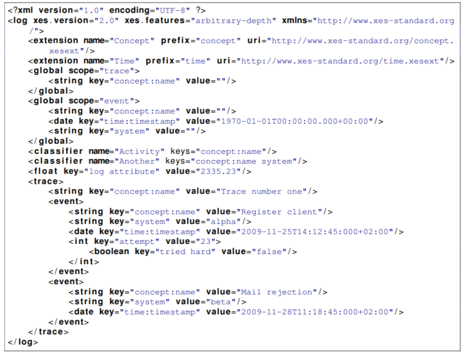</p>

<p>OpenXES is a standard implementation of XES.</p>

<p>OpenXES stores the event log in main memory using the standard classes provided by the Java collections framework.</p>

<p>This simplifies the development and works well with small event logs typically used as examples for research purposes.</p>

<p>However, when using OpenXES for large and complex real-life event logs (e.g., 10 million events with 3 attributes each), the
available main memory on a typical workstation (e.g., 4 GB) is insufficient to load the event log.</p>

<p>XESLite can handle large event logs and overcome the drawback of memory issue.</p>

<p>DB-XES is a database schema which resembles the standard XES structure.</p>

<p>OpenXES는 XES의 일반적인 구현입니다.</p>

<p>OpenXES는 Java 컬렉션 프레임워크에서 제공하는 표준 클래스를 사용하여 메인 메모리에 이벤트 로그를 저장합니다.</p>

<p>이것은 개발을 단순화하고 일반적으로 연구 목적의 예로 사용되는 작은 이벤트 로그들와 잘 작동합니다.</p>

<p>그러나 크고 복잡한 실제 이벤트 로그들(예: 각각 3개의 속성이 있는 천만 개의 이벤트)에 OpenXES를 사용할 때,
일반적인 워크스테이션에서 사용 가능한 주 메모리(예: 4GB)는 이벤트 로그를 로딩하기에 충분하지 않습니다.</p>

<p>XESLite는 대용량 이벤트 로그들을 처리하고 메모리 문제의 단점을 극복합니다.</p>

<p>DB-XES는 일반적인 XES 구조와 유사한 데이터베이스 스키마입니다.</p>

<p>JSON is an open standard lightweight file format commonly used for data interchange.</p>

<p>It uses human-readable text to store and transmit data objects.</p>

<p>Hence, the motivation to define a JSON event log format and create a plugin lies in the fact that we can easily use the JSON logs.</p>

<p>We have used the 4 design principles defined for the XES format, namely, (i) Simplicity, (ii) Flexibility, (iii) Extensibility and (iv) Expressivity.</p>

<p>This helped us to make design decisions with respect to defining the JXES standard format as well as evaluate the implementations
and make suggestions on the optimal parser</p>

<p>JSON은 데이터 교환에 일반적으로 사용되는 개방형 표준 경량 파일 형식입니다.</p>

<p>데이터 객체들을 저장하고 전송하기 위해서 사람이 읽을 수 있는 텍스트를 사용합니다.</p>

<p>따라서 JSON 이벤트 로그 형식을 정의하고 플러그인을 생성하게 된 동기는 JSON 로그를 쉽게 사용할 수 있다는 사실에 있습니다.</p>

<p>XES 형식에 대해 정의된 4가지 디자인 원칙, 즉 (i) 단순성, (ii) 유연성, (iii) 확장성 및 (iv) 표현성을 사용했습니다.</p>

<p>이는 JXES 표준 형식 정의와 관련하여 설계 결정을 내리고 구현방법을 평가하고 최적의 파서에 대해 제안을 하는데 도움이 되었습니다.</p>

<p>For defining the JSON standard format, we have taken into account the XES meta-model shown in Figure 1 which is represented by the basic structure (log, trace and event), Attributes, Nested Attributes, Global Attributes, Event classifiers and Extensions.</p>

<p>There are different types of primitive attributes.</p>

<p>The String and Date attributes are stored as JSON strings.</p>

<p>JSON numbers represent floats and integers.</p>

<p>Boolean values are stored as JSON Boolean.</p>

<p>The List values is represented as an array of JSON Objects.</p>

<p>Lastly, the Container is stored as JSON object.</p>

<p>A log object contains 0 or more trace objects, which are stored in the traces array of JSON objects.</p>

<p>Each trace describes the execution of one specific instance, or case, of the logged process.</p>

<p>Every trace contains an arbitrary number of events objects.</p>

<p>In addition every trace has its own attributes stored in the attrs object.</p>

<p>Below is an example representation of the basic structure</p>

<p>JSON 일반적인 형식을 정의하기 위해, 기본 구조(로그, trace 및 이벤트), 속성, 중첩 속성, 전역 속성, 이벤트 분류자 및 확장으로 표현되는 그림 1에서 보여진 XES 메타 모델을 고려하였습니다.</p>

<p>다양한 유형들의 기본 속성이 있습니다.</p>

<p>String 및 Date 속성은 JSON 문자열로 저장됩니다.</p>

<p>JSON 숫자는 부동 소수점과 정수를 나타냅니다.</p>

<p>부울 값은 JSON 부울로 저장됩니다.</p>

<p>목록 값은 JSON 개체의 배열로 표현됩니다.</p>

<p>마지막으로 Container는 JSON 객체로 저장됩니다.</p>

<p>로그 개체에는 JSON 개체의 trace 배열에 저장되는 0개 이상의 trace 개체가 포함됩니다.</p>

<p>각 trace는 기록된 프로세스의 case 또는 하나의 특정 인스턴스의 실행을 설명합니다.</p>

<p>모든 trace에는 임의의 수의 이벤트 개체가 포함됩니다.</p>

<p>또한 모든 trace에는 attrs 개체에 저장된 고유한 속성이 있습니다.</p>

<p>아래는 기본 구조의 예시 표현입니다.</p>

<div class="language-python highlighter-rouge"><div class="highlight"><pre class="highlight"><code><span class="n">Image</span><span class="p">(</span><span class="s">"C://Users/MyCom/jupyter-tutorial/논문/data/20211117_212833_1.png"</span><span class="p">)</span>
</code></pre></div></div>

<p>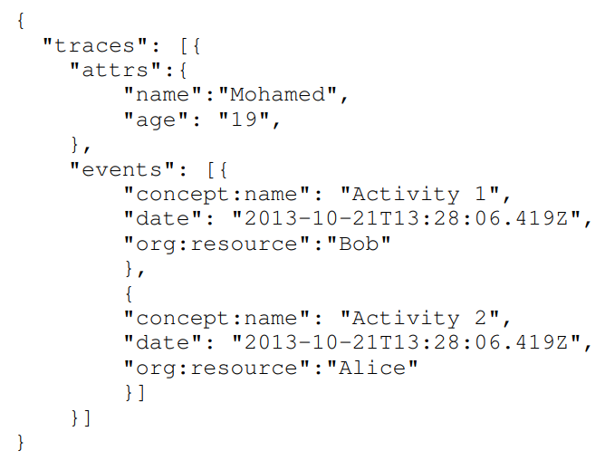</p>

<p>Because the string has the same power as the ID, the ID data type is not supported in JXES.</p>

<p>Below is an example for the representation of every attribute-type.</p>

<p>문자열은 ID와 동일한 권한을 갖기 때문에, ID 데이터 유형은 JXES에서 지원되지 않습니다.</p>

<p>아래는 모든 속성 유형의 표현에 대한 예입니다.</p>

<div class="language-python highlighter-rouge"><div class="highlight"><pre class="highlight"><code><span class="n">Image</span><span class="p">(</span><span class="s">"C://Users/MyCom/jupyter-tutorial/논문/data/20211118_111144_1.png"</span><span class="p">)</span>
</code></pre></div></div>

<p>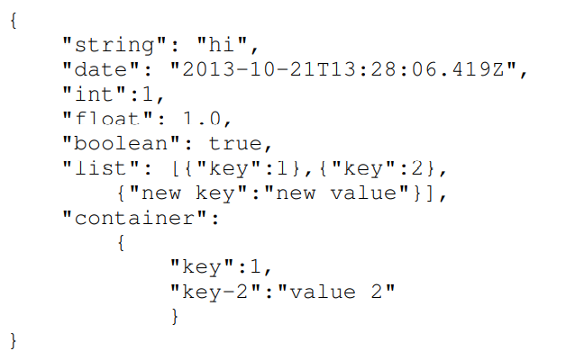</p>

<p>To represent nested attributes in JXES the container with two keys with the names value and nested-attrs is reserved.</p>

<p>Which means that every container with any of the keys value or nested-attrs is reserved by JXES and can not be used by the user.</p>

<p>Every other container is allowed.</p>

<p>Below is an example for a nested attribute container.</p>

<p>JXES에서 중첩된 속성을 나타내기 위해 이름 값과 nested-attrs가 있는 두 개의 키가 있는 컨테이너가 자리잡고 있습니다.</p>

<p>즉, 키 값 또는 중첩 속성이 있는 모든 컨테이너는 JXES의해 자리잡고 있고 사용자에 의해 사용될 수 없습니다.</p>

<p>다른 모든 컨테이너는 허용됩니다.</p>

<p>아래는 중첩된 속성 컨테이너의 예입니다.</p>

<div class="language-python highlighter-rouge"><div class="highlight"><pre class="highlight"><code><span class="n">Image</span><span class="p">(</span><span class="s">"C://Users/MyCom/jupyter-tutorial/논문/data/20211118_112303_1.png"</span><span class="p">)</span>
</code></pre></div></div>

<p>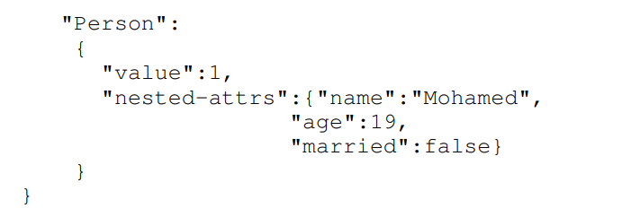</p>

<p>Global attributes are attributes that are understood to be available and properly defined for each element on their respective level throughout the document.</p>

<p>The log object holds two lists of global attributes for the trace level and for the event level.</p>

<p>This means, a global attribute on the event level must be available for every event in every trace.</p>

<p>In JXES, we have defined elements for the trace level and the event level.</p>

<p>They are both stored in under the element global-attrs as nested elements.</p>

<p>Below is an example for a global attribute.</p>

<p>전역 속성은 문서 전체에서 해당 수준의 각 요소에 대해 적절하게 정의되었고 사용 가능하도록 이해되는 속성입니다.</p>

<p>로그 개체에는 trace level 및 이벤트 level에 대한 두 개의 전역 속성 목록이 있습니다.</p>

<p>즉, 이벤트 level의 전역 속성은 모든 trace의 모든 이벤트에 사용될 수 있어야 합니다.</p>

<p>JXES에서는 trace level 및 이벤트 level에 대한 요소들을 정의하였습니다.</p>

<p>둘 다 전역 속성 요소 아래에 중첩 요소로 저장됩니다.</p>

<p>아래는 전역 속성의 예입니다.</p>

<div class="language-python highlighter-rouge"><div class="highlight"><pre class="highlight"><code><span class="n">Image</span><span class="p">(</span><span class="s">"C://Users/MyCom/jupyter-tutorial/논문/data/20211118_115000_1.png"</span><span class="p">)</span>
</code></pre></div></div>

<p>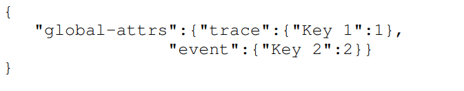</p>

<p>Event Classifiers assigns to each event an identity, which makes it comparable to other events (via their assigned identity).</p>

<p>The JXES format makes event classification configurable and flexible, by introducing the concept of event classifiers.</p>

<p>The classifier name is stored in the key and the classifier keys are stored as an array of strings.</p>

<p>An example of event classifiers can be found below.</p>

<p>이벤트 분류자는 각 이벤트에 ID를 할당하여 다른 이벤트와 비교할 수 있도록 합니다(할당된 ID를 통해).</p>

<p>JXES 형식은 이벤트 분류기의 개념을 도입하여 이벤트 분류를 설정 가능하고 유연하게 만듭니다.</p>

<p>분류자 이름은 키에 저장되고 분류자 키는 문자열 배열로 저장됩니다.</p>

<p>이벤트 분류기의 예는 아래에서 찾을 수 있습니다.</p>

<div class="language-python highlighter-rouge"><div class="highlight"><pre class="highlight"><code><span class="n">Image</span><span class="p">(</span><span class="s">"C://Users/MyCom/jupyter-tutorial/논문/data/20211118_120251_1.png"</span><span class="p">)</span>
</code></pre></div></div>

<p>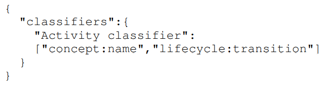</p>

<p>Extensions is a set of attributes on any levels of the XES log hierarchy (log, trace, event, and meta for nested attributes).</p>

<p>Extensions have many possible uses. One important use is to introduce a set of commonly understood attributes which are vital for a specific perspective or dimension of event log analysis (and which may even not have been foreseen at the time of designing the XES standard).</p>

<p>They are stored in an array.</p>

<p>Every object in this array represents an extension.</p>

<p>The name, concept and uri are stored as key value pairs.</p>

<p>See the following example of extension definitions.</p>

<p>확장은 XES 로그 체계의 모든 수준에 있는 속성 집합입니다(중첩 속성의 경우 로그, trace, 이벤트 및 메타).</p>

<p>확장에는 많은 용도가 있습니다. 한 가지 중요한 용도는 이벤트 로그 분석의 특정 관점이나 차원에 필수적인 일반적으로 이해되는 속성 세트를 도입하는 것입니다(XES 표준을 설계할 때 예측하지 못했을 수도 있음).</p>

<p>그것들은 배열에 저장됩니다.</p>

<p>이 배열의 모든 개체는 확장을 나타냅니다.</p>

<p>이름, 개념 및 uri는 키 값 쌍으로 저장됩니다.</p>

<p>확장 정의의 다음 예를 참조하십시오.</p>

<div class="language-python highlighter-rouge"><div class="highlight"><pre class="highlight"><code><span class="n">Image</span><span class="p">(</span><span class="s">"C://Users/MyCom/jupyter-tutorial/논문/data/20211118_125648_1.png"</span><span class="p">)</span>
</code></pre></div></div>

<p>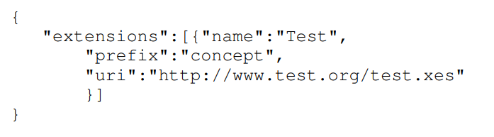</p>

<p>III. IMPLEMENTATION</p>

<p>The basic idea is to enable usage of JSON format of event logs in the ProM tool.</p>

<p>To achieve this we did a market research of the top and best performing Java JSON parsers.</p>

<p>III. 구현</p>

<p>기본 아이디어는 ProM 도구에서 이벤트 로그의 JSON 형식 사용을 활성화하는 것입니다.</p>

<p>이를 달성하기 위해 우리는 최고 성능의 Java JSON 파서에 대한 시장 조사를 수행했습니다.</p>

<div class="language-python highlighter-rouge"><div class="highlight"><pre class="highlight"><code><span class="n">Image</span><span class="p">(</span><span class="s">"C://Users/MyCom/jupyter-tutorial/논문/data/20211118_130123_1.png"</span><span class="p">)</span>
</code></pre></div></div>

<p>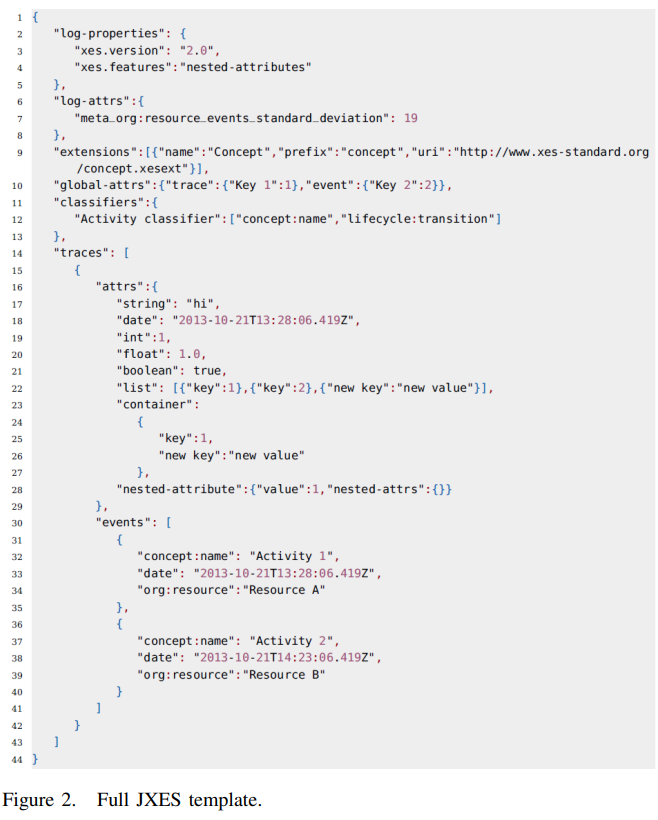</p>

<p>The plugin to import and export the JSON file consists of 4 different parser implementations of import as well as export.</p>

<p>The parsers that have been implemented are Jackson, Jsoninter, GSON and simple JSON.</p>

<p>When the user clicks on ”Import”in ProM tool and chooses a JSON file, the import options related to JXES are displayed where the user can choose from one of the parsers to import as shown in Figure 3.</p>

<p>When the user clicks on ”Export to disk” option, the console to save is displayed with Export parser options as shown in Figure 4.</p>

<p>JSON 파일을 가져오고 내보내는 플러그인은 가져오기 및 내보내기의 4가지 다른 파서 구현으로 구성됩니다.</p>

<p>구현된 파서들은 Jackson, Jsoninter, GSON 및 단순 JSON입니다.</p>

<p>사용자가 ProM 도구에서 “가져오기”를 클릭하고 JSON 파일을 선택하면, 그림 3과 같이 사용자가 가져올 파서 중 하나를 선택할 수 있는 JXES와 관련된 가져오기 옵션이 표시됩니다.</p>

<p>사용자가 “디스크로 내보내기” 옵션을 클릭하면, 그림 4와 같이 파서 내보내기 옵션과 함께 저장할 콘솔이 표시됩니다.</p>

<div class="language-python highlighter-rouge"><div class="highlight"><pre class="highlight"><code><span class="n">Image</span><span class="p">(</span><span class="s">"C://Users/MyCom/jupyter-tutorial/논문/data/20211118_130948_1.png"</span><span class="p">)</span>
</code></pre></div></div>

<p>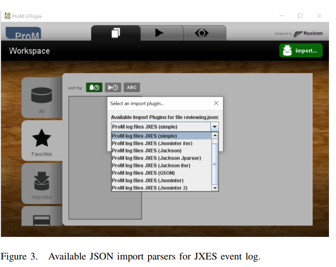</p>

<div class="language-python highlighter-rouge"><div class="highlight"><pre class="highlight"><code><span class="n">Image</span><span class="p">(</span><span class="s">"C://Users/MyCom/jupyter-tutorial/논문/data/20211118_131108_1.png"</span><span class="p">)</span>
</code></pre></div></div>

<p>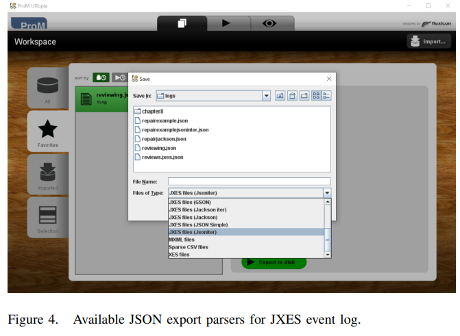</p>

<div class="language-python highlighter-rouge"><div class="highlight"><pre class="highlight"><code><span class="n">Image</span><span class="p">(</span><span class="s">"C://Users/MyCom/jupyter-tutorial/논문/data/20211118_131155_1.png"</span><span class="p">)</span>
</code></pre></div></div>

<p>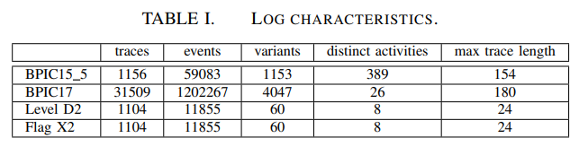</p>

<p>IV. EVALUATION</p>

<p>We used 2 real-life event logs and 2 artificial event logs for our analysis.</p>

<p>Table I highlights some of the key characteristics of the real-life event logs.</p>

<p>The Level D2 log contains all standard attribute extensions like lifecycle, cost, concept and time extensions of an event log.</p>

<p>The Flag X2 log is a Level D2 extended with attributes from non-standard XES extensions and/or attributes without an extension.</p>

<p>IV. 평가</p>

<p>우리는 분석을 위해 2개의 실제 이벤트 로그와 2개의 인공 이벤트 로그를 사용했습니다.</p>

<p>표 I은 실제 이벤트 로그의 몇 가지 주요 특성들을 강조합니다.</p>

<p>레벨 D2 로그에는 이벤트 로그의 수명 주기, 비용, 개념 및 시간 확장과 같은 모든 표준 속성 확장이 포함됩니다.</p>

<p>플래그 X2 로그는 비표준 XES 확장의 속성 및/또는 확장이 없는 속성으로 확장된 레벨 D2입니다.</p>

<p>The evaluation of parsers was done alongside to the existing XES Naive and XES zipped implementations in ProM.</p>

<p>The machine used to run the evaluation is equipped with a 4-core Intel i7 processor and 8 GB of RAM.</p>

<p>파서 평가는 ProM에서 기존 XES Naive 및 XES 압축 구현과 함께 수행되었습니다.</p>

<p>평가를 실행하는 데 사용된 컴퓨터에는 4코어 Intel i7 프로세서와 8GB RAM이 장착되어 있습니다.</p>

<p>The criteria considered for evaluation are (1) speed (2)memory usage and (3) size.</p>

<p>To test the speed and memory of the different parsers, the file is imported/exported thrice and the average of the 3 runs is recorded in the tables.</p>

<p>1) Speed: The best result for JSON parsers is highlighted in green.</p>

<p>The unit of time specified in Table II and Table III is in milliseconds</p>

<p>평가 기준은 (1) 속도 (2) 메모리 사용량 (3) 크기입니다.</p>

<p>다른 파서의 속도와 메모리를 테스트하기 위해서, 파일을 세 번 가져오거나 내보내고 3회 실행의 평균을 테이블에 기록합니다.</p>

<p>1) 속도: JSON 파서에 대한 최상의 결과는 녹색으로 강조 표시됩니다.</p>

<p>표 II 및 표 III에 지정된 시간 단위는 밀리초입니다.</p>

<div class="language-python highlighter-rouge"><div class="highlight"><pre class="highlight"><code><span class="n">Image</span><span class="p">(</span><span class="s">"C://Users/MyCom/jupyter-tutorial/논문/data/20211118_132642_1.png"</span><span class="p">)</span>
</code></pre></div></div>

<p>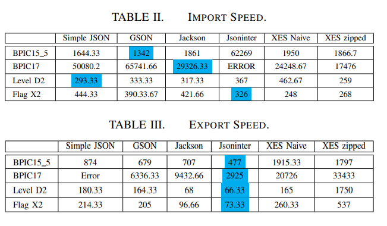</p>

<div class="language-python highlighter-rouge"><div class="highlight"><pre class="highlight"><code><span class="n">Image</span><span class="p">(</span><span class="s">"C://Users/MyCom/jupyter-tutorial/논문/data/20211118_132723_1.png"</span><span class="p">)</span>
</code></pre></div></div>

<p>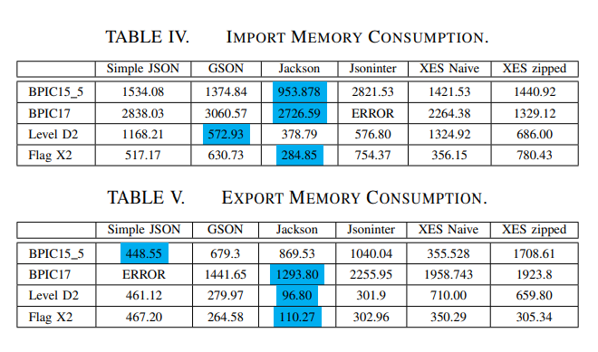</p>

<p>2) Memory: The memory consumption for different parsers and the XES implementation is computed using difference of the JAVA Runtime memory methods totalMemory and freeMemory.</p>

<p>It is noticeable that the Jackson JSON parser uses significantly less memory than the other parsers.</p>

<p>And also that Simple JSON uses little less memory when it comes to average sized files.</p>

<p>The unit of memory given in Table IV and Table V is MBs.</p>

<p>2) 메모리: 다른 파서 및 XES 구현에 대한 메모리 소비는 JAVA 런타임 메모리 메서드 totalMemory 및 freeMemory의 차이를 사용하여 계산됩니다.</p>

<p>Jackson JSON 파서는 다른 파서보다 훨씬 적은 메모리를 사용합니다.</p>

<p>또한 Simple JSON은 평균 크기의 파일과 관련하여 메모리를 거의 사용하지 않습니다.</p>

<p>표 IV 및 표 V에 제공된 메모리 단위는 MB(메가바이트)입니다.</p>

<p>It is clear from the results of the export plugin that JXES is up to 4x faster than XES.</p>

<p>One reason is the reduced syntax that gets written when exporting JSON as compared to XML.</p>

<p>내보내기 플러그인의 결과를 보면 JXES가 XES보다 최대 4배 빠릅니다.</p>

<p>한 가지 이유는 XML과 비교하여 JSON을 내보낼 때 작성되는 축소된 구문 때문입니다.</p>

<p>It is also clear that the Jsoninter parser achieves better results than all others in terms of exporting speed.</p>

<p>The speed improvement in Jsoninter can be attributed to its Dynamic Class Shadowing tri-tree feature.</p>

<p>It is noticeable that the Jackson JSON Parser uses significantly less memory than the other parsers.</p>

<p>This performance can be attributed to the incremental parsing/generation feature which reads and writes JSON content as discrete events.</p>

<p>And also that Simple JSON uses little less Memory when it comes to average sized files.</p>

<p>In addition the Jsoninter JSON parsers uses the most memory in all cases.</p>

<p>또한 Jsoninter 파서가 내보내기 속도 면에서 다른 모든 파서보다 더 나은 결과를 달성한다는 것도 분명합니다.</p>

<p>Jsoninter의 속도 향상은 Dynamic Class Shadowing tri-tree 특징의 결과로 볼 수 있습니다.</p>

<p>Jackson JSON 파서는 다른 파서보다 훨씬 적은 메모리를 사용합니다.</p>

<p>이 성능은 JSON 콘텐츠를 개별 이벤트로 읽고 쓰는 증분 구문 분석/생성 특징의 결과로 볼 수 있습니다.</p>

<p>또한 Simple JSON은 평균 크기의 파일과 관련하여 메모리를 거의 사용하지 않습니다.</p>

<p>또한 Jsoninter JSON 파서는 모든 경우에 가장 많은 메모리를 사용합니다.</p>

<p>3) Size: Table VI provides the size in MBs for the files stored.</p>

<p>The size improvement in JXES is obvious because the type is not specified and tag names are not written twice and the markup is not repeated.</p>

<p>We noted that there was no loss of information during the conversion from XES to JXES and vice versa.</p>

<p>The only difference noted was the log version information in the header of XES file.</p>

<p>We observed that the performance of the XES Naive importer is surprisingly good when compared with the JSON format.</p>

<p>This can be attributed to the fact that XES format has the datatype specified in the tag whereas in JSON we need to parse it completely to determine the datatype.</p>

<p>3) 크기: 테이블 VI는 저장된 파일의 크기(MB:메가바이트)를 제공합니다.</p>

<p>JXES의 크기 개선은 유형이 지정되지 않고 태그 이름이 두 번 작성되지 않고 마크업이 반복되지 않기 때문에 명백합니다.</p>

<p>우리는 XES에서 JXES로 또는 그 반대로 변환하는 동안 정보 손실이 없다는 점에 주목했습니다.</p>

<p>기록된 유일한 차이점은 XES 파일의 헤더에 있는 로그 버전 정보였습니다.</p>

<p>XES Naive 임포터의 성능이 JSON 형식과 비교할 때 놀라울 정도로 좋다는 것을 목격했습니다.</p>

<p>이는 XES 형식이 태그에 명시된 데이터 유형을 갖는 반면 JSON에서는 데이터 유형을 결정하기 위해 완전히 구문 분석해야 한다는 사실에 기인할 수 있습니다.</p>

<ul>
  <li>parser란 compiler의 일부로 컴파일러나 인터프리터에서 원시 프로그램을 읽어 들여 그 문장의 구조를 알아내는 parsing(구문 분석)을 행하는 프로그램</li>
</ul>

<p>V. ACCESS AND DEMONSTRATION</p>

<p>The JXES import and export plugins have been implemented with 4 different JSON parsers.</p>

<p>The code is available in the SVN repository.</p>

<p>The sample logs for JXES format can be found under the tests/testfiles/ directory.</p>

<p>The tutorial video of the parsers implemented as a ProM plugin is available at https://youtu.be/sZ6UnTfSsFI.</p>

<p>Figure 3 and Figure 4 show the different parser options to import and export JSON event logs respectively.</p>

<p>To run the import plugin, we will require the event log in JSON format shown in Figure 2.</p>

<p>The application can also be run by importing any of the event log in CSV or XES format and then converting it into the JSON format</p>

<p>V. 접근 및 시연</p>

<p>JXES 가져오기 및 내보내기 플러그인은 4개의 다른 JSON 구문 분석기로 구현되었습니다.</p>

<p>코드는 SVN 저장소에서 사용할 수 있습니다.</p>

<p>JXES 형식에 대한 샘플 로그는 tests/testfiles/디렉토리에서 찾을 수 있습니다.</p>

<p>ProM 플러그인으로 구현된 파서의 튜토리얼 비디오는 https://youtu.be/sZ6UnTfSsFI 에서 볼 수 있습니다.</p>

<p>그림 3과 그림 4는 각각 JSON 이벤트 로그를 가져오고 내보내는 다양한 파서 옵션을 보여줍니다.</p>

<p>가져오기 플러그인을 실행하려면, 그림 2와 같은 JSON 형식의 이벤트 로그가 필요합니다.</p>

<p>CSV 또는 XES 형식의 이벤트 로그를 가져온 다음 JSON 형식으로 변환하여 애플리케이션을 실행할 수도 있습니다.</p>

<div class="language-python highlighter-rouge"><div class="highlight"><pre class="highlight"><code><span class="n">Image</span><span class="p">(</span><span class="s">"C://Users/MyCom/jupyter-tutorial/논문/data/20211118_140217_1.png"</span><span class="p">)</span>
</code></pre></div></div>

<p>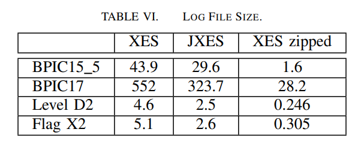</p>

<div class="language-python highlighter-rouge"><div class="highlight"><pre class="highlight"><code><span class="n">Image</span><span class="p">(</span><span class="s">"C://Users/MyCom/jupyter-tutorial/논문/data/20211118_140217_2.png"</span><span class="p">)</span>
</code></pre></div></div>

<p>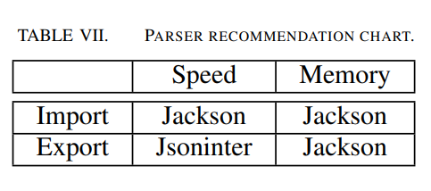</p>

<p>VI. CONCLUSION</p>

<p>We have introduced JXES, which is a JSON format of event log which adheres to the XES principles.</p>

<p>In this paper, we defined the JSON format of event log as defined by the IEEE XES standard.</p>

<p>After defining the standard, we have provided 4 different implementations of import and export options for JSON event logs with different parsers.</p>

<p>VI. 결론</p>

<p>XES 원칙을 준수하는 JSON 형식의 이벤트 로그인 JXES를 소개하였습니다.</p>

<p>본 논문에서는 IEEE XES 표준에서 정의한 JSON 형식의 이벤트 로그를 정의하였다.</p>

<p>표준을 정의한 후 다양한 파서를 사용하여 JSON 이벤트 로그에 대한 가져오기 및 내보내기 옵션의 4가지 구현을 제공했습니다.</p>

<p>Table VII shows the authors recommendation for parser choice in case of import and export considering speed and memory criteria.</p>

<p>It would be interesting to evaluate more parsers (e.g.,JSONP, fastJSON and ProtoBuf)</p>

<p>We hope that the JXES standard defined by this paper will be helpful and serve as a guideline for generating event logs in JSON format.</p>

<p>We also hope that the JXES standard defined in this paper will be useful for many tools like Disco, Celonis, PM4Py, etc., to enable support for JSON event logs.</p>

<p>We also hope that the plugin implemented in ProM will be useful for many with JSON event logs.</p>

<p>표 VII는 속도 및 메모리 기준을 고려하여 가져오기 및 내보내기의 경우 파서 선택에 대한 작성자 권장 사항을 보여줍니다.</p>

<p>더 많은 파서를 평가하는 것은 흥미로울 것입니다(예: JSONP, fastJSON 및 ProtoBuf)</p>

<p>본 논문에서 정의한 JXES 표준이 JSON 형식의 이벤트 로그를 생성하는 데 도움이 되고 지침이 되기를 바랍니다.</p>

<p>또한 이 문서에서 정의한 JXES 표준이 Disco, Celonis, PM4Py 등과 같은 많은 도구에서 JSON 이벤트 로그를 지원하는 데 유용하기를 바랍니다.</p>

<p>또한 ProM에 구현된 플러그인이 JSON 이벤트 로그를 사용하는 많은 사람들에게 유용하기를 바랍니다.</p>

            </section>

        </article>

    </div>
</main>

<!-- /post -->

<!-- The #contentFor helper here will send everything inside it up to the matching #block helper found in default.hbs -->
<script>
$(function() {
    var $postContent = $(".post-full-content");
    $postContent.fitVids();
});
</script>


        <!-- Previous/next page links - displayed on every page -->
        

        <!-- The footer at the very bottom of the screen -->
        <footer class="site-footer outer">
            <div class="site-footer-content inner">
                <section class="copyright"><a href="https://SEONGJAE-YOO.github.io/">Big Data</a> &copy; 2021</section>
                <section class="poweredby">Proudly published with <a href="https://jekyllrb.com/">Jekyll</a> &
                    <a href="https://pages.github.com/" target="_blank" rel="noopener">GitHub Pages</a> using
                    <a href="https://github.com/jekyllt/jasper2" target="_blank" rel="noopener">Jasper2</a></section>
                <nav class="site-footer-nav">
                    <a href="/">Latest Posts</a>
                    
                    
                    <a href="https://seongjae-yoo.github.io/" target="_blank" rel="noopener">SeongJae Yu 블로그</a>
                </nav>
            </div>
        </footer>

    </div>

    <!-- The big email subscribe modal content -->
    
    <div id="subscribe" class="subscribe-overlay">
        <a class="subscribe-overlay-close" href="#"></a>
        <div class="subscribe-overlay-content">
            
            <h1 class="subscribe-overlay-title">Search Big Data</h1>
            <p class="subscribe-overlay-description">
                원하는 검색어를 입력하세요</p>
            <span id="searchform" method="post" action="/subscribe/" class="">
    <input class="confirm" type="hidden" name="confirm"  />
    <input class="location" type="hidden" name="location"  />
    <input class="referrer" type="hidden" name="referrer"  />

    <div class="form-group">
        <input class="subscribe-email" onkeyup="myFunc()"
               id="searchtext" type="text" name="searchtext"
               placeholder="Search..." />
    </div>
    <script type="text/javascript">
        function myFunc() {
            if(event.keyCode == 13) {
                var url = encodeURIComponent($("#searchtext").val());
                location.href = "/search.html?query=" + url;
            }
        }
    </script>
</span>
        </div>
    </div>
    

    <!-- highlight.js -->
    <script src="https://cdnjs.cloudflare.com/ajax/libs/prism/1.10.0/components/prism-abap.min.js"></script>
    <script>$(document).ready(function() {
      $('pre code').each(function(i, block) {
        hljs.highlightBlock(block);
      });
    });</script>

    <!-- jQuery + Fitvids, which makes all video embeds responsive -->
    <script
        src="https://code.jquery.com/jquery-3.2.1.min.js"
        integrity="sha256-hwg4gsxgFZhOsEEamdOYGBf13FyQuiTwlAQgxVSNgt4="
        crossorigin="anonymous">
    </script>
    <script type="text/javascript" src="/assets/js/jquery.fitvids.js"></script>
    <script type="text/javascript" src="https://demo.ghost.io/assets/js/jquery.fitvids.js?v=724281a32e"></script>


    <!-- Paginator increased to "infinit" in _config.yml -->
    <!-- if paginator.posts  -->
    <!-- <script>
        var maxPages = parseInt('');
    </script>
    <script src="/assets/js/infinitescroll.js"></script> -->
    <!-- /endif -->

    


    <!-- Add Google Analytics  -->
    <!-- Google Analytics Tracking code -->
 <script>
  (function(i,s,o,g,r,a,m){i['GoogleAnalyticsObject']=r;i[r]=i[r]||function(){
  (i[r].q=i[r].q||[]).push(arguments)},i[r].l=1*new Date();a=s.createElement(o),
  m=s.getElementsByTagName(o)[0];a.async=1;a.src=g;m.parentNode.insertBefore(a,m)
  })(window,document,'script','//www.google-analytics.com/analytics.js','ga');

  ga('create', 'UA-xxxxxxxx-x', 'auto');
  ga('send', 'pageview');

 </script>


    <!-- The #block helper will pull in data from the #contentFor other template files. In this case, there's some JavaScript which we only want to use in post.hbs, but it needs to be included down here, after jQuery has already loaded. -->
    
        <script>

// NOTE: Scroll performance is poor in Safari
// - this appears to be due to the events firing much more slowly in Safari.
//   Dropping the scroll event and using only a raf loop results in smoother
//   scrolling but continuous processing even when not scrolling
$(document).ready(function () {
    // Start fitVids
    var $postContent = $(".post-full-content");
    $postContent.fitVids();
    // End fitVids

    var progressBar = document.querySelector('progress');
    var header = document.querySelector('.floating-header');
    var title = document.querySelector('.post-full-title');

    var lastScrollY = window.scrollY;
    var lastWindowHeight = window.innerHeight;
    var lastDocumentHeight = $(document).height();
    var ticking = false;

    function onScroll() {
        lastScrollY = window.scrollY;
        requestTick();
    }

    function onResize() {
        lastWindowHeight = window.innerHeight;
        lastDocumentHeight = $(document).height();
        requestTick();
    }

    function requestTick() {
        if (!ticking) {
            requestAnimationFrame(update);
        }
        ticking = true;
    }

    function update() {
        var trigger = title.getBoundingClientRect().top + window.scrollY;
        var triggerOffset = title.offsetHeight + 35;
        var progressMax = lastDocumentHeight - lastWindowHeight;

        // show/hide floating header
        if (lastScrollY >= trigger + triggerOffset) {
            header.classList.add('floating-active');
        } else {
            header.classList.remove('floating-active');
        }

        progressBar.setAttribute('max', progressMax);
        progressBar.setAttribute('value', lastScrollY);

        ticking = false;
    }

    window.addEventListener('scroll', onScroll, {passive: true});
    window.addEventListener('resize', onResize, false);

    update();
});
</script>

    

    <!-- Ghost outputs important scripts and data with this tag - it should always be the very last thing before the closing body tag -->
    <!-- ghost_foot -->

</body>
</html>
